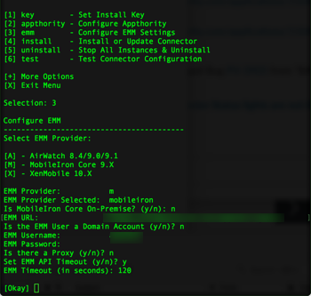

Open topic with navigation
Configure EMM Settings
3. emm - Configure EMM Settings. Select your EMM provider, then follow the prompts. The prompts vary slightly depending on the EMM.
- Select EMM Provider
For MobileIron, answer whether the EMM is on-premises

- Enter your EMM URL.
- Answer whether EMM user is a Domain Account
- Enter your EMM username.
- Enter your EMM Password.
- Enter your EMM API Token, if requested.
- Answer y or n to whether there is a proxy (optional). If yes, continue to enter details.
- If y, enter the proxy host.
- Enter the proxy port.
- Enter the proxy username.
- Enter the proxy password.